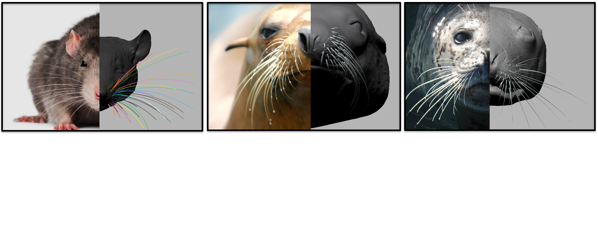

-

Rat whiskers as a model sensory system
We use the vibrissal (whisker) system as a model to study sensorimotor control
-
Rat brainstem
-

Creating a "map of the rat"
We have quantified the geometry of the whisker array
-
"Barrels" in somatosensory cortex
-
"Barrelettes" in the brainstem
-

Behavioral studies inform simulations and robots...
... and simulations and robots guide our study of rodent behavior
-
Livin' on the edge
-

We study and build models of whiskers from many different species
Sensory and Neural Systems Engineering
Welcome to the SeNSE Group website (Mitra Hartmann, PI).
The SeNSE group is part of the Neuroscience and Robotics (NxR) Laboratory, whose research focuses on robotics, neuroscience, and bio-inspired robotics.
This page provides a broad overview of our research goals, as well as links to descriptions of specific research projects. If you're interested in more detailed scientific information, please visit our publications page.
If you are interested in our current Open Source projects, please visit our Github page.
Whiskers and the sense of touch
Our sense of touch is mysterious. It is easy for you to reach into your pocket or purse and — without looking — identify your cellphone, keys, or a coin. Somehow, your brain combines information about your hand movements and the contacts that you make to enable you to perceive a particular object.
The long term goal of our laboratory is to better understand how movement and touch are combined in the brain to enable perception.This type of research could ultimately help people disabled by stroke or brain injury.
We use rats as a model to study the sense of touch. Rats, however, don't use their "hands" (paws) very much to explore objects. Sometimes they do, but mostly they use their whiskers. If you've ever watched a rat run around, you'll notice that they're constantly touching their noses to objects. If you were able to use a slow-motion video camera to watch the rat, as our laboratory does, what you would see is that the rat is continuously brushing its whiskers against objects very rapidly, between 5 and 25 times a second. This behavior is called "whisking." The rat touches different objects to figure out their location, size, shape, and texture.You can watch some slow-motion videos of rat whisking behavior on the first page listed below.
In broad terms, our work may be divided into three main research areas:
- Quantifying and simulating whisking behavior: We use high-speed video to quantify rat whisking behavior, and we use computational models to quantify the contact patterns that whiskers make with different objects.
- Understanding the mechanics of whiskers: We study the mechanics of whiskers in order to gain insight into how the rat’s brain is able to interpret mechanical signals to determine object properties such as size, shape, and texture.
- Constructing robotic models of the whisker system: We construct small robots with whiskers. These robots may find application in several different industries, and are an important investigative tool in neuroscience research.
You can download a three-dimensional model of the rat vibrissal array, along with tools to simulate whisker bending and deformation at the Digital Rat. These models can be used to simulate the whisker-object contact patterns that may occur as a rat explores different objects.
Sensory data and the control of locomotion
We have become interested in how the nervous system might use sensory data from the feet, knees, and hips to help control walking. We have performed simulations of bipedal walking over rough terrain to demonstrate that actuation based on simple combinations of sensory inputs from the joints can lead to stable walking.
Our work on whiskers is supported primarily by grants from the National Science Foundation. Some of our work on locomotion has been supported by the Office of Naval Research and the Jet Propulsion Laboratory.